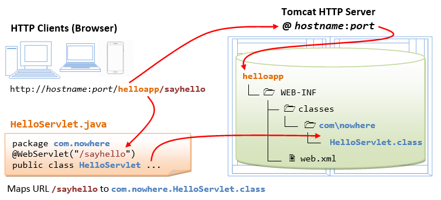
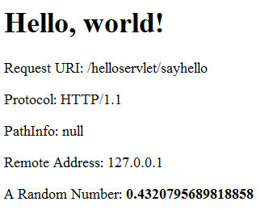

Java EE vs. Jakarta EE
History:
- In May 23, 1995, Sun Microsystem launched Java JDK (Beta), followed by JDK 1.0 in 1996.
- In 1998, Sun launched JDK 1.2 but renamed it "Java 2 Platform, Standard Edition (J2SE)". Sun also launched "Java 2 Platform, Enterprise Edition (J2SE)", which includes Servlet and EJB for enterprise webapps.
- In 2004, JDK 1.5 was again renamed to "Java Platform Standard Edition (Java SE) and "Java Platform, Enterprise Edition (Java EE)".
- In 2017, Oracle submitted "Java EE" to Eclipse Foundation (an open source software foundation). Eclipse renamed "Java EE" to "Jakarta EE", because Oracle owns the trademark "Java". Eclipse also moves the API namespace from
javax.*tojakarta.*.
The Java/Jakarta EE versions are:
- (Under Sun Microsystem/Oracle) J2EE 1.2, J2EE 1.3, J2EE 1.4, Java EE 5, Java EE 6, Java EE 7, Java EE 8. Move to Eclipse Foundation.
- Jakarta EE 8, first Jakarta version (Sept 2019) is fully compatible with Java EE 8 (which is the last version of Java EE).
- Jakarta EE 9 (Dec 2020): API namespace moved from
javax.*tojakarta.* - Jakarta EE 10 (Sept 2022): Removal of deprecated items in Servlet, Faces, CDI and EJB (Entity Beans and Embedable Container).
- Jakarta EE 11 (July 2024): ??
"Java Servlet" is now called "Jakarta Servlet". "Java Server Pages (JSP)" is now called "Jakarta Server pages".
Introduction to Jakarta/Java Servlets
In the early days, web servers deliver static contents that are indifferent to users' requests. Java servlets are server-side programs (running inside a web server's servlet container) that handle clients' requests and return a customized or dynamic response for each request. The dynamic response could be based on user's input (e.g., search) with data retrieved from databases or other applications, or time-sensitive data (such as news and stock prices).
Java servlets typically run on the HTTP protocol. HTTP is an asymmetrical request-response protocol. The client sends a request message to the server, and the server returns a response message as illustrated.

Server-Side Technologies
There are many competing server-side technologies which can generate dynamic contents: Java-based (servlet, JSP, JSF, Struts, Spring, Hibernate), ASP, PHP, Python (Flask, Django), Node.js (JavaScript), (old) CGI Script, and many others.
Java servlet is the foundation of the Java server-side technology, JSP (JavaServer Pages), JSF (JavaServer Faces), Struts, Spring, Hibernate, and others, are extensions of the servlet technology.
Pre-requisites
- HTTP and Apache Tomcat Server
- HTML/CSS/JavaScript for client-side programming
- Java Programming Language (for Servlet/JSP/JSF programming)
- SQL, MySQL Database System, JDBC (Java Database Connectivity)
- Others.
Apache Tomcat Server
Servlets are server-side programs run inside a Java-capable HTTP server. Apache Tomcat Server (@ https://tomcat.apache.org) is the official Reference Implementation (RI) for Java servlet and JSP, provided free by open-source foundation Apache (@ https://www.apache.org).
You need to install Tomcat to run Java servlets. Read "How to Install Tomcat and Get Started Java Servlet Programming".
I shall denote Tomcat's installed directory as <CATALINA_HOME>, and assume that Tomcat server is running in port 8080.
Tomcat provides many excellent servlet examples in "<CATALINA_HOME>\webapps\examples\servlets". You can run these examples by launching Tomcat and issuing URL http://localhost:8080/examples.
Jakarta/Java Servlet Versions
Java Servlet has these versions: [TODO features and what is new]
- J2EE 1.2 (1999-12-17) Java Servlet 2.2, JSP 1.1, EJB 1.1, JDBC 2.0
- J2EE 1.3 (2001-09-24) Java Servlet 2.3, JSP 1.2, EJB 2.0, JDBC 2.1
- J2EE 1.4 (2003-11-11) Java Servlet 2.4, JSP 2.0, EJB 2.1, JDBC 3.0
- Java EE 5 (2006-05-11) Java Servlet 2.5, JSP 2.1, JSTL 1.2, JSF 1.2, EJB 3.0, JDBC 3.0
- Java EE 6 (2009-12-10) Java Servlet 3.0, JSP 2.2/EL 2.2, JSTL 1.2, JSF 2.0, EJB 3.1, JDBC 4.0
- Java EE 7 (2013-05-28): Java Servlet 3.1, ...
- Java EE 8 (2017-08-31) / Jakarta EE 8 (2019-09-10): Jakarta Servlet 4.0, ...
- Jakarta EE 9 (2020-12-08): Jakarta Servlet 5.0, ...
- Jakarta EE 10 (2022-09-13): Jakarta Servlet 6.0, ...
- Jakarta EE 11 (2024?):
The Jakarta Servlets (under the Eclipse Foundation) Home Page is @ https://jakarta.ee/specifications/servlet/. The API documentation is @ https://javadoc.io/doc/jakarta.servlet. The source code is @ https://github.com/jakartaee/servlet.
Java Servlet is the foundation technology for Java server-side programming. You need to understand Servlet thoroughly before you could proceed to other Java server-side technologies such as JavaServer Pages (JSP), JavaServer Faces (JSF), Spring.
Review of HTTP
A HTTP Servlet runs under the HTTP protocol. It is important to understanding the HTTP protocol in order to understand server-side programs (servlet, JSP, ASP, PHP, Python, Node.js, etc) running over the HTTP. Read "HTTP Basics", if needed.
In brief, HTTP is a request-response protocol. The client sends a request message to the server. The server, in turn, returns a response message. The messages consists of two parts: header (information about the message) and body (contents). Header provides information about the messages. The data in header is organized in name-value pairs.
Read "HTTP Request and Response Messages" for the format, syntax of request and response messages, and examples.
First "Hello-world" Servlet
Let us begin by writing a servlet that says hello in response to a client's request. We shall use JDK and Tomcat to understand the basics, instead of IDE such as Eclipse/NetBeans. Once you understand the basics, you should use Eclipse/NetBeans to develop your webapp for better productivity.
Create a new Webapp "helloapp"
We shall begin by defining a new webapp (web application) called "helloapp" in Tomcat. A webapp, known as a web context in Tomcat, comprises a set of resources, such as HTML files, CSS, JavaScripts, images, programs and libraries.
A Java webapp has a standardized directory structure for storing various types of resources.
Create a directory "helloapp" under Tomcat's "webapps" directory (i.e., "<CATALINA_HOME>\webapps\helloapp", where <CATALINA_HOME> denotes Tomcat's installed directory). Create sub-directories "WEB-INF" and "META-INF" under "helloapp". Create sub-sub-directories "classes", "lib" and "src" under "WEB-INF". Take note that the directory names are case-sensitive.
The resources must be kept in the respective directories:
- <CATALINA_HOME>\webapps\helloapp: This directory is known as context root for the web context (webapp) "
helloapp". It contains the resources that are accessible by the clients, such as HTML, CSS, Scripts and images. These resources will be delivered to the clients as it is. You could create sub-directories such asimages,cssandscripts, to further categories the resources. - <CATALINA_HOME>\webapps\helloapp\WEB-INF: This directory is NOT accessible by the clients directly. This is where you keep your application-specific configuration files (such as "
web.xml"), and its sub-directories contain program classes, source files, and libraries.- <CATALINA_HOME>\webapps\helloapp\WEB-INF\src: Keep the Java program source files. It is a good practice to separate the source files and classes to facilitate deployment. Source defined in package must be kept according to the package directory structure. E.g.,
com.nowhere.HelloServlet.javamust be kept in directorycom\nowhere\HelloServlet.java. - <CATALINA_HOME>\webapps\helloapp\WEB-INF\classes: Keep the Java classes (compiled from the source codes).
- <CATALINA_HOME>\webapps\helloapp\WEB-INF\lib: keep the JAR files provided by external packages, available to this webapp only.
- <CATALINA_HOME>\webapps\helloapp\WEB-INF\src: Keep the Java program source files. It is a good practice to separate the source files and classes to facilitate deployment. Source defined in package must be kept according to the package directory structure. E.g.,
- <CATALINA_HOME>\webapps\helloapp\META-INF: This directory is also NOT accessible by the clients. It keeps resources and configurations (e.g., "
context.xml") related to the particular SERVER (e.g., Tomcat, Glassfish). In contrast, "WEB-INF" is for resources related to this WEBAPP, independent of the server.
Write a Hello-world Java Servlet "HelloServlet.java"
Servlets are Java programs that runs inside a Java-capable HTTP server. A user can invoke a servlet by issuing a specific URL from the browser (HTTP client). In this example, we shall write a servlet called "HelloServlet.java" and compiled into "HelloServlet.class". We shall configure such that a client can invoke "HelloServlet.class" by issuing URL http://hostname:port/helloapp/sayhello.
A servlet shall be kept inside a Java package (instead of the default no-name package) for proper deployment. Let's call our package "com.nowhere". Create a sub-directories called "com\nowhere" under "WEB-INF\src". Use a programming text editor to enter the following source codes, and save as "HelloServlet.java" in "<CATALINA_HOME>\webapps\helloapp\WEB-INF\src\com\nowhere".
// To save as <CATALINA_HOME>\webapps\helloapp\WEB-INF\src\com\nowhere\HelloServlet.java
package com.nowhere;
import java.io.*;
import jakarta.servlet.*; // Tomcat 10
import jakarta.servlet.http.*; // Tomcat 10
import jakarta.servlet.annotation.*; // Tomcat 10
//import jakarta.servlet.*; // Tomcat 9
//import jakarta.servlet.http.*; // Tomcat 9
//import jakarta.servlet.annotation.*; // Tomcat 9
@WebServlet("/sayhello") // Configure the request URL for this servlet (Tomcat 7/Servlet 3.0 upwards)
public class HelloServlet extends HttpServlet {
// The doGet() runs once per HTTP GET request to this HTTP servlet.
@Override
public void doGet(HttpServletRequest request, HttpServletResponse response)
throws IOException, ServletException {
// Set the response's MIME type of the response message
response.setContentType("text/html; charset=UTF-8");
// Allocate an output writer to write the response message into the network socket
PrintWriter out = response.getWriter(); // throw IOException
// Write the response message, in an HTML page
// Using triple-quoted multi-line string (Text Block) (JDK 15)
// The beginning triple-quote must be in its own line (i.e., ends with a newline)
out.println("""
<!DOCTYPE html>
<html>
<head><title>Hello, World</title></head>
<body>
<h1>Hello, world!</h1>
<p>Request URI: %s</p>
<p>Protocol: %s</p>
<p>PathInfo: %s</p>
<p>Remote Address: %s</p>
<p>A Random Number: <strong>%f</strong></p>
</body>
</html>
""".formatted(request.getRequestURI(), request.getProtocol(),
request.getPathInfo(), request.getRemoteAddr(),
Math.random())); // Multi-line text block (JDK 15)
out.close(); // Always close the output writer
// For testing and debugging - Print a message to Tomcat's console
System.out.println("hello world, to Tomcat!"); // Check Tomcat's console for this message
}
}How It Works?
- We define a Java class called
HelloServlet(in Line 13). Line 2 places this class in a package calledcom.nowhere. Hence, we save the source file under "com\nowhere" of the "helloapp\WEB-INF\src" directory, following the Java's standard package directory structure. - We need the Servlet API library to compile this program. Servlet API is not part of JDK or Java SE (but belongs to Java EE, now Jakarta EE). Tomcat provides a copy of servlet API called
"servlet-api.jar" in "<CATALINA_HOME>\lib". You need to include the Servlet JAR file in yourCLASSPATHfor compilation. - To compile the program under JDK, we need to use the
-doption to specify the output destination directory to place the compiled class in "helloapp\WEB-INF\class\com\nowhere" directory.// Change directory to <CATALINA_HOME>\webapps\helloapp\WEB-INF cd <CATALINA_HOME>\webapps\helloapp\WEB-INF // Compile the source file and place the class in the specified destination directory javac -cp ..\..\..\lib\servlet-api.jar -d classes src\com\nowhere\HelloServlet.java
- The option "
-d classes" specifies the output destination directory, relative to the current directory. The output is<CATALINA_HOME>\webapps\helloapp\WEB-INF\classes\com\nowhere\HelloServlet.class. The compiler creates the package directory "com\nowhere" automatically. - The option "
-cp" specifies the Servlet API, located at<CATALINA_HOME>\lib\servlet-api.jar.
- The option "
- We don't write a servlet from scratch. Instead, we create a servlet by sub-classing
jakarta.servlet.http.HttpServlet(for Tomcat 10+) (in Line 13). - As mentioned, a servlet is invoked in response to a request URL issued by a client. Specifically, a client issues an HTTP request, the server routes the request message to the servlet for processing. The servlet returns a response message to the client.
- An HTTP request could use either GET or POST request methods, which will be processed by the servlet's
doGet()ordoPost()method, respectively. - In the
HelloServlet, we override thedoGet()method (as denoted by the annotation@Override). ThedoGet()runs in response to an HTTP GET request issued by a user via an URL.doGet()takes two arguments, anHttpServletRequestobject and anHttpServletResponseobject, corresponding to the request and response messages. - The
HttpServletRequestobject can be used to retrieve incoming HTTP request headers and form data. TheHttpServletResponseobject can be used to set the HTTP response headers (e.g., content-type) and the response message body. - In Line 21, we set the "MIME" type of the response message to "
text/html". The client need to know the message type in order to correctly display the data received. (Other MIME types includetext/plain,image/jpeg,video/mpeg,application/xml, and many others.) In Line 23, we retrieve aWriterobject calledoutfor writing the response message to the client over the network. We then use theout.println()to print out a proper HTML page containing the message "Hello, world!". This servlet also echoes some of the clients's request information, and prints a random number for each request. - Starting from Servlet API 3.0, we can use annotation
@WebServletto configure the URL path of the servlet. In Line 12, we configureHelloServletto URL path "/sayhello" (relative to the current web context). That is, to invoke theHelloServlet, you issue a URL "http://localhost:8080/helloapp/sayhello". 
(SKIP)(Pre-Servlet API 3.0) Configure the Webapp Deployment Descriptor "web.xml"
Before Servlet API 3.0, you need to use Deployment Descriptor web.xml to configure the URL path of servlets. Starting from Servlet 3.0, you can use @WebServlet annotation (as above), which is much simpler and therefore recommended.
A web user invokes a servlet, which is kept in the web server, by issuing a specific URL from the browser. In this example, we shall configure the following request URL to trigger the "HelloServlet":
http://hostname:port/helloapp/sayhello
Create a configuration file called "web.xml", and save it under "webapps\helloapp\WEB-INF", as follows:
<?xml version="1.0" encoding="UTF-8"?>
<!-- To save as <CATALINA_HOME>\webapps\helloapp\WEB-INF\web.xml -->
<!-- For Jakarta Servlet 6.0 -->
<web-app xmlns = "https://jakarta.ee/xml/ns/jakartaee"
xmlns:xsi = "http://www.w3.org/2001/XMLSchema-instance"
xsi:schemaLocation = "https://jakarta.ee/xml/ns/jakartaee
https://jakarta.ee/xml/ns/jakartaee/web-app_6_0.xsd"
version = "6.0"
metadata-complete = "false">
<servlet>
<servlet-name>HelloWorldServlet</servlet-name>
<servlet-class>com.nowhere.HelloServlet</servlet-class>
</servlet>
<servlet-mapping>
<servlet-name>HelloWorldServlet</servlet-name>
<url-pattern>/sayhello</url-pattern>
</servlet-mapping>
</web-app>- The "
web.xml" is called web deployment descriptor. It provides the configuration options for that particular webapp, such as defining the the mapping between URL and servlet class. - The above configuration defines a servlet named "
HelloWorldServlet", implemented in "com.nowhere.HelloServlet.class", and maps to URL "/sayhello", where "/" denotes the root of this webapp "helloapp". In other words, the absolute URL for this servlet ishttp://hostname:port/helloapp/sayhello. - Take note that EACH servlet requires a pair of
<servlet>and<servlet-mapping>elements to do the mapping, via an arbitrary but unique<servlet-name>.
Notes: For each servlet, you can use either annotations or web.xml, but NOT both.
Run the Hello-world Servlet
To run the servlet, first start the Tomcat server. Verify that the web context "helloapp" has been deployed by observing the following messages in the Tomcat's console:
xxx x, xxxx xx:xx:xx xx org.apache.catalina.startup.HostConfig deployDirectory INFO: Deploying web application directory helloapp ......
Start a web browser (Firefox, Chrome, Safari), and issue the following URL (as configured in @WebServlet). Assume that Tomcat is running in port number 8080.
http://localhost:8080/helloapp/sayhello
We shall see the output "Hello, world!".
View Page Source
Right-click on the page ⇒ Select "View Page Source":
<!DOCTYPE html> <html><head> <meta http-equiv='Content-Type' content='text/html; charset=UTF-8'> <title>Hello, World</title></head> <body> <h1>Hello, world!</h1> <p>Request URI: /helloapp/sayhello</p> <p>Protocol: HTTP/1.1</p> <p>PathInfo: null</p> <p>Remote Address: 127.0.0.1</p> <p>A Random Number: <strong>0.4320795689818858</strong></p> </body> </html>
It is important to take note that users receive the output of the servlet. User does not receive the servlet's source codes/classes, which are kept under a hidden directory "WEB-INF" and not directly accessible by users.
Tomcat's Console
Check the Tomcat's console for the System.out.println() message. You need to monitor Tomcat's console for information messages and errors.
Errors?
Everything that can possibly go wrong will go wrong... Read "Common Error Messages". The likely errors are "404 File Not Found" and "500 Internal Server Error".
Inspecting HTTP Request and Response Messages
When you enter a URL (e.g., http://localhost:8080/helloapp/sayhello) on a web browser, an HTTP GET request message is sent to the server; and the server returns a response message for display on the web browser. You can inspect the request and response messages via Web browser's Developer Tool.
For Firefox/Chrome, press F12 (called F12 debugger) to enable "Web Console" or "Developer Tool" ⇒ Choose "Network" (or "Net") tab ⇒ Enter URL http://localhost:8080/helloapp/sayhello (or refresh) ⇒ Expand a request and inspect the request/response's header/body.
The Request Header is as follows:
GET http://localhost:8080/helloapp/sayhello HTTP/1.1 Host: localhost:9999 Accept: text/html,application/xhtml+xml,application/xml;q=0.9,*/*;q=0.8 Accept-Encoding: gzip, deflate Accept-Language: en-US,en;q=0.5 Cache-Control:max-age=0 Connection: keep-alive Upgrade-Insecure-Requests: 1 User-Agent: Mozilla/5.0 (Windows NT 10.0; WOW64; rv:52.0) Gecko/20100101 Firefox/52.0
For this request, there is no Request Body.
The Response Header is as follows:
HTTP/1.1 200 OK Date: xxx, xx xxx xxxx xx:xx:xx xxx Content-Length: 286 Content-Type: text/html;charset=ISO-8859-1
The Response Body is as follows:
<!DOCTYPE html> <html> <head><title>Hello, World</title></head> <body> <h1>Hello, world!</h1> <p>Request URI: /hello/sayhello</p> <p>Protocol: HTTP/1.1</p> <p>PathInfo: null</p> <p>Remote Address: 0:0:0:0:0:0:0:1</p> <p>A Random Number: <strong>0.4480280769255568</strong></p> </body></html>
(Advanced) Using cURL (Client URL)
Alternatively, you can also use utility cURL (client URL) to inspect the HTTP request and response header/body, by issuing curl command from CMD/Terminal:
curl -v http://localhost:9999/hello/sayhello * Trying [::1]:9999... * Connected to localhost (::1) port 9999 > GET /helloapp/sayhello HTTP/1.1 > Host: localhost:9999 > User-Agent: curl/8.4.0 > Accept: */* > < HTTP/1.1 200 < Content-Type: text/html;charset=UTF-8 < Content-Length: 297 < Date: Sun, 14 Apr 2024 09:43:16 GMT < <!DOCTYPE html> <html> <head><title>Hello, World</title></head> <body> <h1>Hello, world!</h1> <p>Request URI: /helloapp/sayhello</p> <p>Protocol: HTTP/1.1</p> <p>PathInfo: null</p> <p>Remote Address: 0:0:0:0:0:0:0:1</p> <p>A Random Number: <strong>0.251389</strong></p> </body> </html> * Connection #0 to host localhost left intact
Notes:
cURLis a command line tool that enables data exchange between a client and a server using various network protocols through a terminal.- The request header is marked by a leading
>. There is no request body. - The response header is marked by a leading
<followed by the response body.
Using IDE
For production, you certainly should use an IDE to raise your productivity. See "IDE for Jakarta EE". Try out IntelliJ IDEA, Eclipse, or NetBeans.
Processing HTML Form Data
Write a Client-side HTML Form: input.html
HTML provides a <form>...</form> tag, which can be used to build a user input form containing elements such as text fields, password field, radio buttons, pull-down menu, checkboxes, text area, hidden field, submit and reset buttons. This allows web users to interact with the web server by submit data. For example,
Create the following HTML script, and save as "input.html" under the context root "helloapp".
<!DOCTYPE html>
<html lang="en">
<head>
<meta charset="UTF-8">
<title>User Input Form</title>
</head>
<body>
<h2>User Input Form</h2>
<form method="get" action="echo">
<fieldset>
<legend>Personal Particular</legend>
Name: <input type="text" name="username" minlength="8" maxlength="12" required /><br /><br />
Password: <input type="password" name="password" required
pattern="^(?=.*[a-z])(?=.*[A-Z])(?=.*[0-9])(?=.*[!@#$%^&*_=+]).{12,}$" /><br /><br />
email: <input type="email" name="email" required /><br /><br />
Gender:
<input type="radio" name="gender" value="m" checked />Male
<input type="radio" name="gender" value="f" />Female<br /><br />
Age: <select name = "age">
<option value="1">< 1 year old</option>
<option value="99">1 to 99 years old</option>
<option value="100">> 99 years old</option>
</select>
</fieldset>
<fieldset>
<legend>Languages</legend>
<input type="checkbox" name="language" value="java" checked />Java
<input type="checkbox" name="language" value="c" />C/C++
<input type="checkbox" name="language" value="cs" />C#
</fieldset>
<fieldset>
<legend>Instruction</legend>
<textarea rows="5" cols="30" name="instruction">Enter your instruction here...</textarea>
</fieldset>
<input type="hidden" name="secret" value="888" />
<input type="submit" value="SEND" />
<input type="reset" value="CLEAR" />
</form>
</body>
</html>Start the tomcat server. Issue the following URL to request for the HTML page:
http://localhost:8080/helloapp/input.html
How It Work?
- The
<fieldset>...</fieldset>tag groups related elements and displays them in a box. The<legend>...</legend>tag provides the legend for the box. - This HTML form (enclosed within
<form>...</form>) contains the following types of input elements:- Text field (
<input type="text">): for web users to enter text. - Radio buttons (
<input type="radio">): choose any one (and possibly none). - Pull-down menu (
<select>and<option>): pull-down menu of options. - Checkboxes (
<input type="checkbox">): chose none or more. - Text area (
<textarea>...<textarea>): for web users to enter multi-line text. (Text field for single line only.) - Hidden field (
<input type="hidden">): for submitting hiddenname=valuepair. - Submit button (
<input type=submit>): user clicks this button to submit the form data to the server. - Reset button (
<input type="reset">): resets all the input field to their default value.
name", and an optional attribute "value". If an element is selected, its "name=value" pair will be submitted to the server for processing. - Text field (
- The <form> start-tag also specifies the URL for submission in the
action="url" attribute, and the request method in themethod="get|post"attribute. - For "Name" text field, we set the
minlength="8"andmaxlength="12". - For "Password" field, we use the following
pattern="regex"attribute:pattern="^(?=.*[a-z])(?=.*[A-Z])(?=.*[0-9])(?=.*[!@#$%^&*_=+]).{12,}$"This regular expression looks for at least one lowercase letter, one uppercase letter, one number and one special symbol, with minimum length of 12.
"?=" is known as positive lookahead, which performs the match but does not consume any characters. For example, "?=.*[a-z]" match zero or more ANY characters (.*) followed by a lowercase letter ([a-z]), without consuming any characters. The ".{12,}" sets the minimum length to 12 (and consumes the characters).
Query Parameters Name-Value Pairs
For example, suppose that we enter "Alan Smith" in the text field, "aaaaaaaaa1@" in password, "a.b@c" in email, select "male", and click the "SEND" button, we will get a "404 page not found" error (because we have yet to write the processing script). BUT observe the destination URL:
http://localhost:8080/helloapp/echo?username=Alan+Smith&email=a%40b.c&gender=m&....
Observe that:
- The URL
http://localhost:8080/helloapp/echois retrieved from the attributeaction="echo"of the<form>start-tag. Relative URL is used in this example. The base URL for the current page "input.html" ishttp://localhost:8080/helloapp/. Hence, the relative URL "echo" resolves intohttp://localhost:8080/helloapp/echo. - A
'?'follows the URL, which separates the URL and the so-called query string (or query parameters, request parameters) followed. - The query string comprises the "
name=value" pairs of the selected input elements (i.e., "username=Alan+Smith", "gender=m", etc). The "name=value" pairs are separated by an'&'. Also take note that the blank (in "Alan Smith") is replace by a'+'. This is because special characters are not permitted in the URL and have to be encoded (known as URL-encoding). Blank is encoded as'+'(or%20). Other characters are encoded as%xx, wherexxis the ASCII code in hex. For example,'&'as%26,'?'as%3F. - Some input elements such as checkboxes may trigger multiple parameter values, e.g., "
language=java&language=c&language=cs" if all three boxes are checked. - HTTP provides two request methods: GET and POST. For GET request, the query parameters are appended behind the URL. For POST request, the query string are sent in the request message's body. POST request is often preferred, as users will not see the strange string in the URL and it can send an unlimited amount of data. The amount of data that can be sent via the GET request is limited by the length of the URL. The request method is specified in the
<form method="get|post"...>start-tag. In this tutorial, we use the GET request, so that you can inspect the query string.
Write a Server-side Servlet to Process Form Input: "EchoServlet.java"
The form that we have written send its data to a server-side program having URL of "echo" (as specified in the action="url" attribute of the <form> start-tag). Let us write a servlet called EchoServlet, which shall be mapped to the URL "echo", to process the incoming form data. The servlet simply echoes the data back to the client.
Similar to the "HelloServlet", we define the "EchoServlet" under package "com.nowhere", and save the source file as "<CATALINA_HOME>\webapps\helloapp\WEB-INF\src\com\nowhere\EchoServlet.java".
// To save as "<CATALINA_HOME>\webapps\helloapp\WEB-INF\src\com\nowhere\EchoServlet.java"
package com.nowhere;
import jakarta.servlet.*;
import jakarta.servlet.http.*;
import jakarta.servlet.annotation.*;
import java.io.*;
import java.util.*;
import static org.apache.commons.text.StringEscapeUtils.escapeHtml4; // Apache Commons Text 1.12
@WebServlet("/echo")
public class EchoServlet extends HttpServlet {
@Override
public void doGet(HttpServletRequest request, HttpServletResponse response)
throws IOException, ServletException {
// Set the response message's MIME type
response.setContentType("text/html; charset=UTF-8");
// Allocate an output writer to write the response message into the network socket
PrintWriter out = response.getWriter();
// Write the response message, in an HTML page
out.println("<!DOCTYPE html>");
out.println("<html><head>");
out.println("<meta charset='UTF-8'>");
out.println("<title>Echo Servlet</title></head>");
out.println("<body><h2>You have enter</h2>");
// Retrieve the value of the query parameter "username" (from text field)
String username = request.getParameter("username");
// Get null if the parameter is missing.
// Get empty string or string of white spaces if user did not fill in.
if (username == null
|| (username = escapeHtml4(username.trim())).isEmpty()) {
out.println("<p>Name: MISSING</p>");
} else {
out.println("<p>Name: " + username + "</p>");
}
// Retrieve the value of the query parameter "email" (from text field)
String email = request.getParameter("email");
if (email == null
|| (email = escapeHtml4(email.trim())).isEmpty()) {
out.println("<p>Email: MISSING</p>");
} else {
out.println("<p>Email: " + email + "</p>");
}
// Retrieve the value of the query parameter "gender" (from radio button)
String gender = request.getParameter("gender");
if (gender == null) {
out.println("<p>Gender: MISSING</p>");
} else if (gender.equals("m")) {
out.println("<p>Gender: male</p>");
} else {
out.println("<p>Gender: female</p>");
}
// Retrieve the value of the query parameter "age" (from pull-down menu)
String age = request.getParameter("age");
if (age == null) {
out.println("<p>Age: MISSING</p>");
} else if (age.equals("1")) {
out.println("<p>Age: < 1 year old</p>");
} else if (age.equals("99")) {
out.println("<p>Age: 1 to 99 years old</p>");
} else {
out.println("<p>Age: > 99 years old</p>");
}
// Retrieve the value of the query parameter "language" (from checkboxes).
// Multiple values possible. Use getParameterValues() which returns an array of String.
String[] languages = request.getParameterValues("language");
if (languages == null || languages.length == 0) {
out.println("<p>Languages: NONE</p>");
} else {
out.println("<p>Languages: ");
for (String language : languages) {
switch (language) {
case "c" -> out.println("C/C++ ");
case "cs" -> out.println("C# ");
case "java" -> out.println("Java ");
}
}
out.println("</p>");
}
// Retrieve the value of the query parameter "instruction" (from text area)
String instruction = request.getParameter("instruction");
if (instruction == null
|| (instruction = escapeHtml4(instruction.trim())).isEmpty()
|| instruction.equals("Enter your instruction here...")) {
out.println("<p>Instruction: NONE</p>");
} else {
out.println("<p>Instruction: " + instruction + "</p>");
}
// Retrieve the value of the query parameter "secret" (from hidden field)
String secret = request.getParameter("secret");
out.println("<p>Secret: " + secret + "</p>");
// Get all the names of request parameters in an Enumeration<String>
Enumeration<String> names = request.getParameterNames();
out.println("<p>Request Parameter Names are: ");
if (names.hasMoreElements()) {
out.print(escapeHtml4(names.nextElement()));
}
do {
out.print(", " + escapeHtml4(names.nextElement()));
} while (names.hasMoreElements());
out.println(".</p>");
// Hyperlink "BACK" to input page
out.println("<a href='input.html'>BACK</a>");
out.println("</body></html>");
out.close(); // Always close the output writer
}
// Redirect POST request to GET request.
@Override
public void doPost(HttpServletRequest request, HttpServletResponse response)
throws IOException, ServletException {
doGet(request, response);
}
}How It Works?
- The query string comprises
name=valuepairs. We can retrieve the query parameters from the request message (captured indoGet()'s argumentHttpServletRequest request) via one of the following methods:request.getParameter("paramName"):String // Returns the parameter value in a String. // Returns null if parameter name does not exist. // Returns the first parameter value for a multi-value parameter. request.getParameterValues("paramName"):String[] // Return all the parameter values in a String[]. // Return null if the parameter name does not exist. request.getParameterNames():java.util.Enumeration<String> // Return all the parameter names in a java.util.Enumeration, possibly empty. - Take note that the parameter name is case sensitive.
- We use
request.getParameter("paramName")to retrieve the parameter value for most of the single-value input elements (such as text field, radio button, text area, etc). If the parameter is present (notnull), wetrim()the returned string to remove the leading and trailing white spaces. - We also replace the special HTML characters (
>,<,&,") with the HTML escape sequences in the input strings, before we echo them back to the client viaout.println(). This step is necessary to prevent the so-called command-injection attack, where user enters a script into the text field.
The replacement is done viastaticmethodStringEscapeUtils.escapeHtml4()of the "Apache Commons Text" library.
To use this library, you need to:- Goto "Apache Commons Text" @ https://commons.apache.org/proper/commons-text/. Download
commons-text-1.12.0-bin.zip. Extractcommons-text-1.12.0.jarand place in underhelloapp\WEB-INF\lib. - "Apache Commons Text" requires "Apache Commons Lang". Goto Apache Commons Lang @ https://commons.apache.org/proper/commons-lang/. Download
commons-lang3-3.14.0-bin.zip. Extractcommons-lang3-3.14.0.jarand place in underhelloapp\WEB-INF\lib.
EchoServlet.javausing JDK, issue these commands:cd <CATALINA_HOME>\webapp\helloapp\WEB-INF javac -cp ..\..\..\lib\servlet-api.jar;lib\commons-lang3-3.14.0.jar;lib\commons-text-1.12.0.jar -d classes src\com\nowhere\Ech oServlet.java
If you use Maven, you can add the following dependency inpom.xml:<dependency> <groupId>org.apache.commons</groupId> <artifactId>commons-text</artifactId> <version>1.12.0</version> </dependency>Rule of thumb: Any text string taken from the client and echoing back viaout.println()needs to be filtered to prevent command-injection attack! - Goto "Apache Commons Text" @ https://commons.apache.org/proper/commons-text/. Download
- If the parameter could possess multiple values (e.g., checkboxes), we use
request.getParameterValues(), which returns an array ofStringornullif the parameter does not exist. - One of the nice features of Java servlet is that all the form data decoding (i.e., URL-decoding) is handled automatically. That is,
'+'will be decoded to blank,%xxdecoded into the corresponding character.
Run the EchoServlet
Start the Tomcat server. Issue URL http://localhost:8080/helloapp/input.html. Fill up the form, click the submit button to trigger the servlet at http://localhost:8080/helloapp/echo?....
Alternatively, you could issue a URL http://localhost:8080/helloapp/echo?... with query string.
HTTP Methods for Submitting Form Data: GET vs. POST
Two HTTP request methods, GET and POST, are available for submitting form data, specified in the <form>'s attribute "method=GET|POST". GET and POST performs the same basic function. That is, gather the name-value pairs of the selected input elements, URL-encode (e.g., replace blank with +), and pack them into a query string. However, in a GET request, the query string is appended behind the URL, separated by a '?'. Whereas in a POST request, the query string is kept in the request body (and not shown in the URL). The length of query string in a GET request is limited by the maximum length of URL permitted, whereas it is unlimited in a POST request. I recommend POST request for production, as it does not show the strange looking query string in the URL, even if the amount of data is limited. However, in this tutorial, I use GET method, so that you can inspect the query string on the URL.
To try out the POST request, modify the "input.html":
<form method="post" action="echo">
......
</form>
Inside the servlet, GET request is processed by the method doGet(), while POST request is processed by the method doPost(). If they perform the same operations, we could re-direct doPost() to doGet() (or vice versa), as follows:
public class MyServlet extends HttpServlet {
// doGet() handles HTTP GET request
@Override
public void doGet(HttpServletRequest request, HttpServletResponse response)
throws IOException, ServletException {
......
......
}
// doPost() handles HTTP POST request
@Override
public void doPost(HttpServletRequest request, HttpServletResponse response)
throws IOException, ServletException {
doGet(request, response); // call doGet()
}
}
Request Header and Response Header
HTTP is a request-response protocol. The client sends a request message to the server. The server, in turn, returns a response message. The request and response messages consists of two parts: a header (information about the message) and a body (contents). Header provides information about the request/response messages. The data in header is organized in name-value pairs. Read "HTTP Request and Response Messages" for the format, syntax of request and response messages.
HttpServletRequest Object
The request message is encapsulated in an HttpServletRequest object, which is passed into the doGet() methods by the Servlet container. HttpServletRequest object provides many methods for you to retrieve the headers:
- General methods:
getHeader(name),getHeaders(name),getHeaderNames(). - Specific methods:
getContentLength(),getContentType(),getCookies(),getAuthType(), etc. - URL related:
getRequestURI(),getQueryString(),getProtocol(),getMethod().
Example: Read "Request Header Example".
HttpServletResponse Object
The response message is encapsulated in the HttpServletResponse object, which is passed into doGet() for you to form the servlet output by the servlet container.
setStatusCode(int statuscode),sendError(int code, String message),sendRedirect(url).response.setHeader(String headerName, String headerValue).setContentType(String mimeType),setContentLength(int length), etc.
Example: [TODO]
RequestDispatcher: forward() and include()
We could use a RequestDispatcher to forward a request to another entity, or include another entity in the response.
The API is as follows:
Interface jakarta.servlet.RequestDispatcher void forward(ServletRequest request, ServletResponse response) // Forwards a request from a servlet to another resource (servlet, JSP file, or HTML file). void include(ServletRequest request, ServletResponse response) // Includes the content of a resource (servlet, JSP page, HTML file) in the response.
You can get a RequestDispatcher from HttpServletRequest via method getRequestDispatcher():
Interface HttpServletRequest Super-Interface ServletRequest jakarta.servlet.RequestDispatcher getRequestDispatcher(String path) // Returns a RequestDispatcher that acts as a wrapper for the resource located at the given path // within the current servlet context.
Example: LoginServlet
Client-side HTML Form: input.html
We shall re-use the input.html, but change action="login".
Server-side Servlet: LoginServlet.java
// To save as "<CATALINA_HOME>\webapps\helloapp\WEB-INF\src\com\nowhere\LoginServlet.java"
package com.nowhere;
import jakarta.servlet.*;
import jakarta.servlet.http.*;
import jakarta.servlet.annotation.*;
import java.io.*;
@WebServlet("/login")
public class LoginServlet extends HttpServlet {
@Override
public void doGet(HttpServletRequest request, HttpServletResponse response)
throws IOException, ServletException {
// Set the response message's MIME type
response.setContentType("text/html; charset=UTF-8");
// Allocate an output writer to write the response message into the network socket
PrintWriter out = response.getWriter();
// Write the response message, in an HTML page
String username = request.getParameter("username");
if (username.equals("peter678")) {
RequestDispatcher rd = request.getRequestDispatcher("/echo");
rd.forward(request, response);
// or one-liner
// request.getRequestDispatcher("/echo").forward(request, response);
} else {
RequestDispatcher rd = request.getRequestDispatcher("input.html");
out.println("<p>Wrong username or password. Try again:</p>"); // break well-form HTML
rd.include(request, response);
}
out.close();
}
// Redirect POST request to GET request.
@Override
public void doPost(HttpServletRequest request, HttpServletResponse response)
throws IOException, ServletException {
doGet(request, response);
}
}How It Works?
- We check the username (hardcoded in this example). If it is valid, we forward to "
/echo" (EchoServlet). Otherwise, we print a error message and include the "input.html" to try again (however, the html page is broken and not well-form!).
HttpServletResponse: sendRedirect()
The HttpServletResponse's sendRedirect() can be used to send a redirect response, so that the client can make a new request to the redirect location. See HTTP article on "302 Temporary Redirect" response.
Interface HttpServletResponse void sendRedirect(String location) // Sends a temporary redirect response to the client using the specified redirect location URL and // sets the status code to SC_FOUND 302 (Found). // The client shall make a new request to the location specified.
Example: SearchServlet
Client-side HTML Form: search.html
<!DOCTYPE html>
<html lang = "en">
<head>
<meta charset="UTF-8">
<title>Search Form</title>
</head>
<body>
<form method="get" action="search">
<p>Search: <input type="text" name="searchKey"></p>
<input type="submit" value="search">
</form>
</body>
</html>Server-side Servlet: SearchServlet.java
package com.nowhere;
import java.io.*;
import jakarta.servlet.*; // Tomcat 10
import jakarta.servlet.http.*; // Tomcat 10
import jakarta.servlet.annotation.*; // Tomcat 10
@WebServlet("/search")
public class SearchServlet extends HttpServlet {
@Override
protected void doGet(HttpServletRequest req, HttpServletResponse resp) throws ServletException, IOException {
String searchKey = req.getParameter("searchKey");
resp.sendRedirect("https://www.google.com/search?q=" + searchKey);
}
}How It Works?
- The
SearchServletredirects to google with thesearchKeyreceived. - Push F12 on the browser to trigger the debugger. Inspect the requests/responses to understand how "302 temporary redirect" works.
- The HTTP GET request http://localhost:8080/helloapp/search.html receives a 302 response.
- The response header is:
HTTP/1.1 302 Location: https://www.google.com/search?q=java Content-Length: 0 Date: Mon, 29 Apr 2024 05:50:40 GMT Keep-Alive: timeout=20 Connection: keep-alive
- The browser automatically sends a new request to the "Location" in the 302 response header.
ServletConfig and ServletContext
- There is ONE
jakarta.servlet.ServletConfigfor EACH servlet. - There is ONE
jakarta.servlet.ServletContextfor the entire webapp shared by all the servlets and resources under the webapp.
ServletConfig Object
From the API: The jakarta.servlet.ServletConfig is a servlet configuration object used by a servlet container (e.g., Tomcat, GlassFish) to pass information to a particular servlet during initialization.
Each servlet can maintain a set of init parameters in the form of name-value pairs. You can set the init parameters using @WebInitParam annotation or web.xml deployment descriptor.
Example 1: Using Init Parameters defined in web.xml
Server-side Servlet: ServletConfigInitParamTest1.java
package com.nowhere;
import jakarta.servlet.*;
import jakarta.servlet.http.*;
import java.io.IOException;
import java.io.PrintWriter;
// urlPatterns="/initparam1" and initParam defined in web.xml
public class ServletConfigInitParamTest1 extends HttpServlet {
String databaseURL;
String username;
// init() runs ONCE during the servlet initialization.
@Override
public void init(ServletConfig config) throws ServletException {
super.init(config);
// You can retrieve the init parameter in init() once to be used by doGet() repeatably.
databaseURL = config.getInitParameter("databaseURL");
}
// doGet() runs ONCE per HTTP GET request.
@Override
protected void doGet(HttpServletRequest req, HttpServletResponse resp) throws ServletException, IOException {
// You can also retrieve the init parameter in doGet()
username = getInitParameter("username"); // (1) via HttpServlet
// username = getServletConfig().getInitParameter("username"); // (2) via ServletConfig
resp.setContentType("text/plain");
PrintWriter out = resp.getWriter();
out.println("Connecting to " + databaseURL);
out.println("username: " + username);
out.close();
}
}Deployment Descriptor web.xml
<?xml version="1.0" encoding="UTF-8"?>
<!-- for Jakarta Servlet 6.0 -->
<web-app xmlns = "https://jakarta.ee/xml/ns/jakartaee"
xmlns:xsi = "http://www.w3.org/2001/XMLSchema-instance"
xsi:schemaLocation = "https://jakarta.ee/xml/ns/jakartaee
https://jakarta.ee/xml/ns/jakartaee/web-app_6_0.xsd"
version = "6.0" metadata-complete = "false">
<display-name>Servlet Init Parameters Tests</display-name>
<servlet>
<servlet-name>ServletInitParamTest1</servlet-name>
<servlet-class>com.nowhere.ServletConfigInitParamTest1</servlet-class>
<init-param>
<param-name>databaseURL</param-name>
<param-value>jdbc:mysql://localhost:3306/ebookshop</param-value>
</init-param>
<init-param>
<param-name>username</param-name>
<param-value>peter</param-value>
</init-param>
</servlet>
<servlet-mapping>
<servlet-name>ServletInitParamTest1</servlet-name>
<url-pattern>/initparam1</url-pattern>
</servlet-mapping>
</web-app>To run: Issue URL http://localhost:8080/helloapp/initparam1.
How It Works?
- You could keep the database username and password in a configuration file (web.xml) and read into the servlet via init parameters, instead of hardcoding in your source file, for security reason.
- Each servlet has a
ServletConfigobject. You could retrieve the init parameters in theinit()once, and use indoGet()repeatably.
Example 2: Using init parameters defined by @WebInitParam
Server-side Servlet: ServletConfigInitParamTest2.java
package com.nowhere;
import jakarta.servlet.*;
import jakarta.servlet.http.*;
import jakarta.servlet.annotation.*;
import java.io.IOException;
import java.io.PrintWriter;
// use @WebInitParam annotation to define init parameters under @WebServlet
@WebServlet(urlPatterns = "/initparam2",
initParams = {
@WebInitParam(name = "username", value = "paul"),
@WebInitParam(name = "password", value = "yyyy")
}
)
public class ServletConfigInitParamTest2 extends HttpServlet {
@Override
protected void doGet(HttpServletRequest req, HttpServletResponse resp) throws ServletException, IOException {
String username = getInitParameter("username");
String password = getInitParameter("password");
resp.setContentType("text/plain");
PrintWriter out = resp.getWriter();
out.println("username: " + username);
out.println("password: " + password);
out.close();
}
}To run: Issue URL http://localhost:8080/helloapp/initparam2.
How It Works?
- In this example, we define the init parameters using annotation
@WebInitParam(Servlet 3.0 onwards) in the same source file. This is no difference from definingprivatestaticfinalvariables?!
ServletContext Object
From the API: The jakarta.servlet.ServletContext defines a set of methods that a servlet uses to communicate with its servlet container, for example, to get the MIME type of a file, dispatch requests, or write to a log file. There is one context per webapp.
The ServletContext object is contained within the ServletConfig object, which the Web server provides the servlet when the servlet is initialized. You can get the ServletContext via ServletConfig.getServletContext().
ServletContext has an "application" scope. It can also be used to pass information between servlets and JSPs within the same webapp, via methods setAttribute("name", Object) and getAttribute("name").
Example 3: Using ServletContext
Server-side Servlet: ServletContextParamTest1.java
package com.nowhere;
import jakarta.servlet.*;
import jakarta.servlet.annotation.*;
import jakarta.servlet.http.*;
import java.io.*;
@WebServlet("/contextparam1")
public class ServletContextParamTest1 extends HttpServlet {
String username;
String password;
@Override
public void init(ServletConfig config) throws ServletException {
super.init(config);
// You can retrieve the context parameter in init() once to be used by doGet() repeatably.
username = config.getServletContext().getInitParameter("username");
}
@Override
protected void doGet(HttpServletRequest req, HttpServletResponse resp) throws ServletException, IOException {
// You can also retrieve the context param in deGet(), once per request.
password = getServletContext().getInitParameter("password");
resp.setContentType("text/plain");
PrintWriter out = resp.getWriter();
out.println("username: " + username);
out.println("password: " + password);
out.close();
}
}web.xml
Define the context parameters in web.xml as follows:
<web-app ...>
......
<context-param>
<param-name>username</param-name>
<param-value>emily</param-value>
</context-param>
<context-param>
<param-name>password</param-name>
<param-value>zzzz</param-value>
</context-param>
......
</web-app>Notes:
- You could write another servlet (called
ServletContextInitParamTest1a) to access the same context parameters. TheServletContextis available to all servlets in the same webapp. - Take note that I am mixing the annotation and
web.xmlin this example, which is not recommended. - There is no annotations for
context-param(unlike the@WebInitParamforServletConfig's init param), because you cannot attached them to a particular servlet.
Example 4: Using ServletContext to Pass Data Between Servlets
Server-side Servlet: ServletContextParamTest2.java
package com.nowhere;
import jakarta.servlet.*;
import jakarta.servlet.annotation.*;
import jakarta.servlet.http.*;
import java.io.*;
@WebServlet("/contextparam2")
public class ServletContextParamTest2 extends HttpServlet {
// init() runs ONCE during the servlet initialization.
@Override
public void init(ServletConfig config) throws ServletException {
super.init();
// Save in ServletContext to be shared by all servlets.
ServletContext context = config.getServletContext();
context.setAttribute("username", "alice"); // set
context.setAttribute("password", "yyyy");
}
@Override
protected void doGet(HttpServletRequest req, HttpServletResponse resp) throws ServletException, IOException {
req.getRequestDispatcher("/contextparam2a").forward(req, resp);
}
}Server-side Servlet: ServletContextParamTest2a.java
package com.nowhere;
import jakarta.servlet.*;
import jakarta.servlet.annotation.*;
import jakarta.servlet.http.*;
import java.io.*;
@WebServlet("/contextparam2a")
public class ServletContextParamTest2a extends HttpServlet {
String username;
String password;
@Override
public void init(ServletConfig config) throws ServletException {
super.init();
ServletContext context = config.getServletContext();
username = (String) context.getAttribute("username"); // get
password = (String) context.getAttribute("password");
}
@Override
protected void doGet(HttpServletRequest req, HttpServletResponse resp) throws ServletException, IOException {
resp.setContentType("text/plain");
PrintWriter out = resp.getWriter();
out.println("username: " + username);
out.println("password: " + password);
out.close();
}
}Session Tracking
HTTP is a stateless protocol. In other words, the current request does not know what has been done in the previous requests. This creates a problem for applications that runs over many requests, such as online shopping (or shopping cart). You need to maintain a so-called session to pass data among the multiple requests.
You can maintain a session via one of these three approaches:
- Cookie: A cookie is a small text file that is stored in the client's machine, which will be send to the server on each request. You can put your session data inside the cookie. The biggest problem in using cookie is clients may disable the cookie.
- URL Rewriting: Passes data by appending a short text string at the end of every URL, e.g.,
http://host/path/file.html;jsessionid=123456. You need to rewrite all the URLs (e.g., the "action" attribute of<form>) to include the session data. - Hidden field in an HTML form: pass data by using hidden field tag (
<input type="hidden" name="session" value="...." />). Again, you need to include the hidden field in all the pages.
For detailed information, read "HTTP state and session management".
HttpSession
Programming your own session tracking (using the above approaches) is tedious and cumbersome. Fortunately, Java Servlet API provides a session tracking facility, via an interface called jakarta.servlet.http.HttpSession. It allows servlets to:
- View and manipulate information about a session, such as the session identifier, creation time, and last accessed time.
- Bind objects to sessions, allowing user information to persist across multiple user requests.
The procedure is as follows:
- Check if a session already exists. If so, use the existing session object; otherwise, create a new session object. Servlet API automates this step via the
getSession()method ofHttpServletRequest:
// Retrieve the current session. Create one if not exists HttpSession session = request.getSession(true); HttpSession session = request.getSession(); // same as above // Retrieve the current session. // Do not create new session if not exists but return null HttpSession session = request.getSession(false);
The first statement returns the existing session if exists, and create a newHttpSessionobject otherwise. Each session is identified via a session ID. You can usesession.getID()to retrieve the session ID string.
HttpSession, by default, uses cookie to pass the session ID in all the client's requests within a session. If cookie is disabled,HttpSessionswitches to URL-rewriting to append the session ID behind the URL. To ensure robust session tracking, all the URLs emitted from the server-side programs should pass thru the methodresponse.encodeURL(url). If cookie is used for session tracking,encodeURL(url)returns theurlunchanged. If URL-rewriting is used,encodeURL(url)encodes the specifiedurlby including the session ID. - The session object maintains data in the form of
key-valuepairs. You can usesession.getAttribute(key)to retrieve thevalueof an existing key,session.setAttribute(key, value)to store newkey-valuepair, andsession.removeAttribute(key)to remove an existingkey-valuepair. For example,// Allocate a shopping cart (assume to be a list of String) List<String> shoppingCart = new ArrayList<>(); // Populate the shopping cart shoppingCart.add("Item 1"); ..... // Retrieve the current session, create one if not exists HttpSession session = request.getSession(true); // Place the shopping cart inside the session synchronized (session) { // synchronized to prevent concurrent updates session.setAttribute("cart", shoppingCart); } .....
Any page within the session can retrieve the shopping cart:// Retrieve the current session, do not create new session HttpSession session = request.getSession(false); if (session != null) { List<String> theCart = (List<String>)session.getAttribute("cart"); if (theCart != null) { // cart exists? for (String item : theCart) { ...... } } }
- You can use
session.invalidate()to terminate and remove a session. You can use setsetMaxInactiveInterval()andgetMaxInactiveInterval()to set and get the inactive interval from the last client request, before the server invalidate the session.
Example
The following servlet demonstrates the use of session, by counting the number of accesses within this session from a particular client. We also use getID() to retrieve the session ID, getCreationTime() and getLastAccessedTime() to get the session creation and last accessed times.
SessionServlet.java
// To save as "<CATALINA_HOME>\webapps\helloapp\WEB-INF\src\com\nowhere\SessionServlet.java" package com.nowhere; import java.io.*; import jakarta.servlet.*; import jakarta.servlet.http.*; import java.util.Date; public class SessionServlet extends HttpServlet { @Override public void doGet(HttpServletRequest request, HttpServletResponse response) throws IOException, ServletException { // Set the response message's MIME type response.setContentType("text/html;charset=UTF-8"); // Allocate a output writer to write the response message into the network socket PrintWriter out = response.getWriter(); // Return the existing session if there is one. Create a new session otherwise. HttpSession session = request.getSession(); Integer accessCount; synchronized(session) { accessCount = (Integer)session.getAttribute("accessCount"); if (accessCount == null) { accessCount = 0; // autobox int to Integer } else { accessCount = new Integer(accessCount + 1); } session.setAttribute("accessCount", accessCount); } // Write the response message, in an HTML page try { out.println("<!DOCTYPE html>"); out.println("<html>"); out.println("<head><meta http-equiv='Content-Type' content='text/html; charset=UTF-8'>"); out.println("<title>Session Test Servlet</title></head><body>"); out.println("<h2>You have access this site " + accessCount + " times in this session.</h2>"); out.println("<p>(Session ID is " + session.getId() + ")</p>"); out.println("<p>(Session creation time is " + new Date(session.getCreationTime()) + ")</p>"); out.println("<p>(Session last access time is " + new Date(session.getLastAccessedTime()) + ")</p>"); out.println("<p>(Session max inactive interval is " + session.getMaxInactiveInterval() + " seconds)</p>"); out.println("<p><a href='" + request.getRequestURI() + "'>Refresh</a>"); out.println("<p><a href='" + response.encodeURL(request.getRequestURI()) + "'>Refresh with URL rewriting</a>"); out.println("</body></html>"); } finally { out.close(); // Always close the output writer } } }
web.xml
...... <servlet> <servlet-name>SessionTestServlet</servlet-name> <servlet-class>com.nowhere.SessionServlet</servlet-class> </servlet> ...... ...... <servlet-mapping> <servlet-name>SessionTestServlet</servlet-name> <url-pattern>/sessiontest</url-pattern> </servlet-mapping>
Running the Servlet
You can use URL http://localhost:8080/helloapp/sessiontest to access this servlet. Try refreshing the page. Try also closing and restart the browser, and issue the URL.
Under Firefox, a cookie named jsessionid is created for this session. The value of the cookie is the same as the return value of session.getID(). By default, Servlet API uses a cookie for managing session, but will automatically switch into URL rewriting if cookie is disabled. To ensure robust session tracking, all the URLs emitted from the server-side programs should pass thru the method response.encodeURL(url). If cookie is used for session tracking, encodeURL(url) returns the url unchanged. If URL-rewriting is used, encodeURL(url) encodes the specified url by including the session ID. The session data are kept in the server, only a session ID is passed to the client.
Try disabling the cookie, and use (a) the refresh button (F5), (b) refresh and clear cache (Ctrl-F5), (c) the refresh link, and (d) the refresh with URL re-writing, to refresh the page.
Developing and Deploying Web Applications using IDE
It is a lot more productive and efficient to use an IDE (such as Eclipse or NetBeans) to develop your web application. You could start/stop your servers from IDE directly. You could debug your web application in IDE, like debugging standalone application.
NetBeans: Read "Developing and Deploying Web Applications in NetBeans".
Eclipse: Read "Developing and Deploying Web Applications in Eclipse".
Tomcat's Servlet Examples
Tomcat provides a number of excellent servlet examples in "<CATALINA_HOME>\webapps\examples". The servlet source files are kept under "<CATALINA_HOME>\webapps\examples\WEB-INF\classes", together with the compiled classes. To run the examples, start Tomcat server and issue URL http://localhost:8080/examples.
I strongly encourage you to study the examples, Read "Tomcat's Java Servlet Examples Explained".
Database Servlet
Read "Java Servlet Case Study" and "Java Servlet Case Study Continue".
Servlet API – A Deeper Look
A servlet is a Java web component, managed by a servlet container (such as Apache Tomcat or Glassfish), which generates dynamic content in response to client's request. A servlet container (or servlet engine) is a web server extension which provides servlet functionality. A servlet container contains and manages servlets throughout their life cycle.
Interface Servlet
The Servlet interface is the central abstraction of the Java servlet API. HttpServlet - the most commonly servlet which handles HTTP requests, is a subclass of GenericServlet which implements Servlet interface.
The Servlet interface declares these abstract methods:
// Servlet's lifecycle void init(ServletConfig config) void destroy() void service(ServletRequest request, ServletResponse response) // Servlet configuration and information ServletConfig getServletConfig() String getServletInfo()
A Servlet's Life cycle
A servlet's life cycle is managed via the init(), service() and destroy() methods.

Loading and Initialization
Servlet container (e.g., Tomcat or Glassfish) is responsible for loading and instantiating servlets. It may load and instantiate servlets when it is started, or delay until it determines that the servlet is needed to service a request (usually at the first request to the servlet).
The servlet container invokes the init(ServletConfig) method of the servlet, providing a ServletConfig object as an argument. init() runs only once. It is usually used to read persistent configuration data and initialize costly resource.
This ServletConfig object allows the servlet to access initialization parameters for this particular servlet. These parameters are defined in the web application deployment descriptor file (i.e., “web.xml”), under the servlet's name, as follows:
<servlet>
<servlet-name>ServletName</servlet-name>
<servlet-class>ServletClassFile</servlet-class>
<init-param>
<param-name>initParam1</param-name>
<param-value>initParam1Value</param-value>
</init-param>
<init-param>
<param-name>initParam2</param-name>
<param-value>initParam2Value</param-value>
</init-param>
</servlet>
The ServletConfig interface defines these methods to retrieve the initialization parameters for this servlet.
String getInitParameter(String name) java.util.Enumeration getInitParameterNames()
For example,
public void init(ServletConfig config) throws ServletException {
// Read all the init parameters for this servlet
Enumeration e = config.getInitParameterNames();
while (e.hasMoreElements()) {
String initParamName = (String)e.nextElement();
String initParamValue = config.getInitParameter(initParamName);
......
}
}
The ServletConfig interface is implemented by HTTPServlet and GenericServlet. Hence, the getInitParameter() and getInitParameterNames() method can be called directly within init() or service().
The ServletConfig also gives servlet access to a ServletContext object that provides information about this web context (aka web application). ServletContext will be discussed later.
In Service
Once a servlet is initialized, the servlet container invokes its service() method to handle client requests. This method is called once for each request. Generally, the servlet container handle concurrent request to the same servlet by running service() on different threads (unless SingleThreadModel interface is declared).
For HttpServlet, service() dispatches doGet(), doPost(), doHead(), doOptions(), doTrace(), etc, to handle HTTP GET, POST, HEAD, OPTIONS, TRACE, etc, request respectively.
The service() method of an HttpServlet takes two arguments, an HttpServletRequest object and an HttpServletResponse object that corresponds to the HTTP request and response messages respectively.
End of Service
When the servlet container decides that a servlet should be removed from the container (e.g., shutting down the container or time-out, which is implementation-dependent), it calls the destroy() method to release any resource it is using and save any persistent state. Before the servlet container calls the destroy(), it must allow all service() threads to complete or time-out.
Interface ServletContext
The ServletContext interface defines a servlet's view of the webapp (or web context) in which it is running (a better name is actually ApplicationContext). Via the ServletContext object, a servlet can communicate with the container, e.g., write to event log, get the URL reference to resources, and get and set attributes that other servlets in the same context can access.
There is one ServletContext object for each web application deployed into a container. You can specify initialization parameters for a web context (that are available to all the servlet under the web context) in the web application deployment descriptor, e.g.,
<web-app ......>
<context-param>
<param-name>jdbcDriver</param-name>
<param-value>com.mysql.jdbc.Driver</param-value>
</context-param>
<context-param>
<param-name>databaseUrl</param-name>
<param-value>jdbc:mysql://localhost/eshop</param-value>
</context-param>
......
</web-app>
Servlets under this web context can access the context's initialization parameters via the ServletConfig's methods:
// ServletConfig
String getInitParameter(String name)
java.util.Enumeration getInitParameterNames()
A servlet can bind an attribute of name-value pair into the ServletContext, which will then be available to other servlet in the same web application. The methods available are:
// ServletContext
Object getAttribute(String name)
void setAttribute(String name, Object value)
void removeAttribute(String name)
java.util.Enumeration getAttributeNames()
Other methods in ServletContext are:
// Write message to event log void log(String message) // Get container info String getServerInfo() int getMajorVersion() int getMinorVersion()
The ServletContext provides direct access to static content of the web application (such as HTML, GIF files), via the following methods:
java.net.URL getResource(String path) java.io.InputStream getResourceAsStream(String path)
Dispatch Request - RequestDispatcher
When building a web application, it is often useful to forward a request to another servlet, or to include the output of another servlet in the response. The RequestDispatcher interface supports these. The RequestDispatcher can be obtained via ServletContext:
// ServletContext
RequestDispatcher getRequestDispatcher(String servletPath)
RequestDispatcher getNamedDispatcher(String servletName)
Once the servlet obtained a RequestDispatcher of another servlet within the same web application, it could include or forward the request to that servlet, e.g.,
RequestDispatcher rd = context.getRequestDispatcher("/test.jsp?isbn=123");
rd.include(request, response);
// or
rd.forward(request, response);
Filtering
A filter is a reusable piece of code that can transform the content of HTTP requests, responses, and header information. Examples of filtering components are:
- Authentication filters
- Logging and auditing filters
- Image conversion filters
- Data compression filters
- Encryption filters
- Tokenizing filters
- Filters that trigger resource access events
- XSL/T filters that transform XML content
- MIME-type chain filters
- Caching filters
[TODO] more
Web Application Deployment Descriptor "web.xml"
The "web.xml" contains the web application deployment descriptors. Tomcat's has a system-wide (global) "web.xml" in "<CATALINA_HOME>\conf". Each web application has its own "web.xml" in "ContextRoot\WEB-INF", which overrides the global settings. Tomcat monitors web.xml for all web applications and reloads the web application when web.xml changes, if reloadable is set to true.
A Sample "web.xml"
<?xml version="1.0" encoding="ISO-8859-1"?>
<web-app version="3.0"
xmlns="http://java.sun.com/xml/ns/javaee"
xmlns:xsi="http://www.w3.org/2001/XMLSchema-instance"
xsi:schemaLocation="http://java.sun.com/xml/ns/javaee http://java.sun.com/xml/ns/javaee/web-app_3_0.xsd">
<!-- General Description of the web application -->
<display-name>Workshop Continue</display-name>
<description>We shall continue our e-bookstore...</description>
<!-- Context initialization parameters -->
<!-- Provide the database related parameters -->
<context-param>
<param-name>jdbcDriver</param-name>
<param-value>com.mysql.jdbc.Driver</param-value>
</context-param>
<context-param>
<param-name>databaseUrl</param-name>
<param-value>jdbc:mysql://localhost/eshop</param-value>
</context-param>
<!-- Define servlets -->
<servlet>
<servlet-name>BookQuery</servlet-name>
<servlet-class>BookQueryServlet</servlet-class>
<init-param>
<param-name>popularAuthor</param-name>
<param-value>Kelvin Jones</param-value>
</init-param>
</servlet>
<!-- Define servlet's URL mapping -->
<servlet-mapping>
<servlet-name>BookQuery</servlet-name>
<url-pattern>/query</url-pattern>
</servlet-mapping>
<session-config>
<session-timeout>30</session-timeout>
</session-config>
<mime-mapping>
<extension>pdf</extension>
<mime-type>application/pdf</mime-type>
</mime-mapping>
<!-- For directory request -->
<welcome-file-list>
<welcome-file>index.jsp</welcome-file>
<welcome-file>index.html</welcome-file>
<welcome-file>index.htm</welcome-file>
</welcome-file-list>
<error-page>
<error-code>404</error-code>
<location>/404.html</location>
</error-page>
</web-app>Syntax for "web.xml"
Servlets 3.0 "web.xml" Syntax
Tomcat 7 and Glassfish 3.1 supports Servlet 3.0.
<?xml version="1.0" encoding="ISO-8859-1"?>
<web-app version="3.0"
xmlns="http://java.sun.com/xml/ns/javaee"
xmlns:xsi="http://www.w3.org/2001/XMLSchema-instance"
xsi:schemaLocation="http://java.sun.com/xml/ns/javaee http://java.sun.com/xml/ns/javaee/web-app_3_0.xsd"
metadata-complete="true">
......
</web-app>
Servlets 2.5 "web.xml" Syntax
Tomcat 6 and Glassfish 3 supports Servlets 2.5, JSP 2.1 and JSF 2.0.
<?xml version="1.0" encoding="ISO-8859-1"?>
<web-app version="2.5"
xmlns:xsi="http://www.w3.org/2001/XMLSchema-instance"
xmlns="http://java.sun.com/xml/ns/javaee"
xmlns:web="http://java.sun.com/xml/ns/javaee/web-app_2_5.xsd"
xsi:schemaLocation="http://java.sun.com/xml/ns/javaee http://java.sun.com/xml/ns/javaee/web-app_2_5.xsd">
.......
</web-app>
Servlets 2.4 "web.xml" Syntax
<?xml version="1.0" encoding="ISO-8859-1"?>
<web-app version="2.4"
xmlns="http://java.sun.com/xml/ns/j2ee"
xmlns:xsi="http://www.w3.org/2001/XMLSchema-instance"
xsi:schemaLocation="http://java.sun.com/xml/ns/j2ee http://java.sun.com/xml/ns/j2ee/web-app_2_4.xsd">
.......
</web-app>
Servlet Deployment Descriptor
To deploy a servlet, you need to write one pair of <servlet> and <servlet-mapping> elements, with a matching (but arbitrary and unique) <servlet-name>. The <servlet-class> specifies the fully-qualified name of the servlet class. The <url-pattern> specifies the URL. For example,
<web-app ...>
<servlet>
<servlet-name>ServletName</servlet-name>
<servlet-class>com.nowhere.MyServlet</servlet-class>
</servlet>
<servlet-mapping>
<servlet-name>ServletName</servlet-name>
<url-pattern>/MyURL</url-pattern>
</servlet-mapping>
</web-app>
The resultant URL is http://hostname:port/WebContext/MyURL.
You can use wildcard '*' in the <url-pattern> for pattern matching. For example, /MyURL.* (which is matched by /MyURL.html and etc.), /MyURL/* (which is matched by /MyURL/test, and etc.)
Always use a custom URL for servlet, as you could choose a short and meaningful URL and include initialization. parameters, filter, security setting in the deployment descriptor (see the next section).
Servlet Initialization Parameters
You can pass initialization parameters in the form of name-value pairs into a particular servlet from "web.xml". For example,
<web-app ...>
<servlet>
<servlet-name>ServletName</servlet-name>
<servlet-class>com.nowhere.MyServlet</servlet-class>
<init-param>
<param-name>debug</param-name>
<param-value>false</param-value>
</init-param>
<init-param>
<param-name>listing</param-name>
<param-value>true</param-value>
</init-param>
</servlet>
<servlet-mapping>
<servlet-name>ServletName</servlet-name>
<url-pattern>/MyURL</url-pattern>
</servlet-mapping>
</web-app>
Inside the servlet, you can retrieve the init parameters via the ServletConfig object:
package com.nowhere;
public class MyServlet extends HttpServlet {
private boolean debug = false, listing = false;
@Override
public void init() {
ServletConfig config = getServletConfig();
String strDebug = config.getInitParameter("debug");
if (strDebug.equals("true")) debug = true;
String strListing = config.getInitParameter("listing");
if (strListing.equals("true")) listing = true;
}
......
}
Application Initialization Parameters
Specified in webapp's "WEB-INF\web.xml", and available to all the servlets under this webapp. You can use the getInitParameter() method of ServletContext object to retrieve the init parameters.
<web-app ......>
<context-param>
<param-name>email</param-name>
<param-value>query@abcde.com</param-value>
</context-param>
......
</web-app>
Server-wide Initialization Parameters
Similar to application init parameters, but defined in the global "<CATALINA_HOME>\conf\web.xml".
<context-param> <param-name>email</param-name> <param-value>query@abcde.com</param-value> </context-param>
Use the getInitParameter() method of ServletContext object to retrieve the init parameters.
Welcome Page
Specifies the page to be displayed for request to web context root. For example,
<web-app ...>
......
<welcome-file-list>
<welcome-file>index.jsp</welcome-file>
<welcome-file>index.html</welcome-file>
<welcome-file>test/index.html</welcome-file>
</welcome-file-list>
</web-app>
Servlet 3.0
Servlet API 3.0 introduces these annotations to simplify deployment in jakarta.servlet.annotation package:
@WebServlet: Define a servlet component@WebInitParam: Define initialization parameters for a servlet@WebListener: Define a listener@WebFilter: Define a filter@MultipartConfig: For multipart file upload
For example,
@WebServlet(
name = "HelloServletExample",
urlPatterns = {"/sayhello"},
initParams = {
@WebInitParam(name = "param1", value = "value1"),
@WebInitParam(name = "param2", value = "value2")}
)
public class HelloServlet extends HttpServlet { ...... }
The above is equivalent to the following configuration in "web.xml" prior to Servlet 3.0. The web application deployment descriptor "web.xml" has become optional in Servlet 3.0. Instead, the container at run time will process the annotations of the classes in WEB-INF/classes and JAR files in lib directory.
// web.xml
<servlet>
<servlet-name>HelloServletExample</servlet-name>
<servlet-class>hello.HelloServlet</servlet-class>
<init-param>
<param-name>param1</param-name>
<param-value>value1</param-value>
</init-param>
<init-param>
<param-name>param2</param-name>
<param-value>value2</param-value>
</init-param>
</servlet>
<servlet-mapping>
<servlet-name>HelloServletExample</servlet-name>
<url-pattern>/sayhello</url-pattern>
</servlet-mapping>
@WebServlet
@WebServlet defines a servlet component and its metadata, with the following attributes:
String[] urlPatterns: An array of String declaring theurl-patternforservlet-mapping. Default is an empty array{}.String[] value:urlPatterns.String name:servlet-name, default is empty string"".loadOnStartup: Theload-on-startuporder of the servlet, default is -1.WebInitParam[] initParams: The init parameters of the servlet, default is an empty array{}.boolean asyncSupported: Declares whether the servlet supports asynchronous operation mode, default is false.String smallIcon,String largeIcon,String description: icon and description of the servlet.
Example:
@WebServlet("/sayHello") public class Hello1Servlet extends HttpServlet { ...... } // One URL pattern @WebServlet(urlPatterns = {"/sayhello", "/sayhi"}) public class Hello2Servlet extends HttpServlet { ...... } // More than one URL patterns
@WebInitParam
@WebInitParam is Used to declare init params in servlet, with the following attributes:
String nameandString value(required): Declare the name and value of the init parameter.String description(optional) description, default empty string"".
See the above example.
@WebFilter
@WebFilter defines a filter (which implements jakarta.servlet.Filter interface).
For example, the following filter log the request time for all the requests (urlPattern="/*").
package com.nowhere;
import java.io.*;
import java.util.logging.Logger;
import jakarta.servlet.*;
import jakarta.servlet.annotation.*;
import jakarta.servlet.http.*;
@WebFilter(urlPatterns={"/*"})
public class RequestTimerFilter implements Filter {
private static final Logger logger
= Logger.getLogger(RequestTimerFilter.class.getName());
@Override
public void init(FilterConfig config) throws ServletException {
logger.info("RequestTimerFilter initialized");
}
@Override
public void doFilter(ServletRequest request, ServletResponse response,
FilterChain chain)
throws IOException, ServletException {
long before = System.currentTimeMillis();
chain.doFilter(request, response);
long after = System.currentTimeMillis();
String path = ((HttpServletRequest)request).getRequestURI();
logger.info(path + ": " + (after - before) + " msec");
}
@Override
public void destroy() {
logger.info("RequestTimerFilter destroyed");
}
}@WebListener
@WebListener defines a listener (which extends ServletContextListener, ServletRequestListener or HttpSessionListener). For example,
@WebListener()
public class MyContextListener extends ServletContextListener { ...... }
@MultipartConfig
For uploading file using multipart/form-data POST Request. Read "Uploading Files in Servlet 3.0".
REFERENCES & RESOURCES
- Java Servlets Home Page @ http://java.sun.com/products/servlet. Servlet Developers @ http://java.net/projects/servlet/.
- Java Servlet 2.2, 2.3, 2.4, 2.5, 3.0 API Specifications.
- Apache Tomcat Server @ http://tomcat.apache.org.
- RFC2616 "Hypertext Transfer Protocol HTTP 1.1", W3C, June 1999.
- HTML 4.01 Specification, W3C Recommendation, 24 Dec 1999 @ http://www.w3.org/TR/html401, and HTML 5 Draft Specification @ http://www.w3.org/TR/html5.
- The Java EE 6 Tutorial, Chapter 10 Java Servlet Technology, December 2009 @ http://java.sun.com/javaee/6/docs/tutorial/doc/bnafd.html.
- The Java EE 5 Tutorial, Chapter 4 Java Servlet Technology, October 2008 @ http://java.sun.com/javaee/5/docs/tutorial/doc/bnafd.html.
- The J2EE 1.4 Tutorial, Chapter 11 Java Servlet Technology, December, 2005 @ http://java.sun.com/j2ee/1.4/docs/tutorial/doc/.
- The J2EE 1.3 Tutorial "Java Servlet Technology" @ http://java.sun.com/j2ee/tutorial/1_3-fcs/doc/Servlets.html.
- Java EE 6 Technologies @ http://www.oracle.com/technetwork/java/javaee/tech/index-jsp-142185.html.
- Java EE 5 Technologies @ http://www.oracle.com/technetwork/java/javaee/tech/javaee5-jsp-135162.html.
- Marty Hall, "Core Servlets and JavaServer Pages", vol.1 (2nd eds, 2003) and vol. 2 (2nd eds, 2006), Prentice Hall.
- java.net - The Source for Java Technology Collaboration @ http://www.java.net.